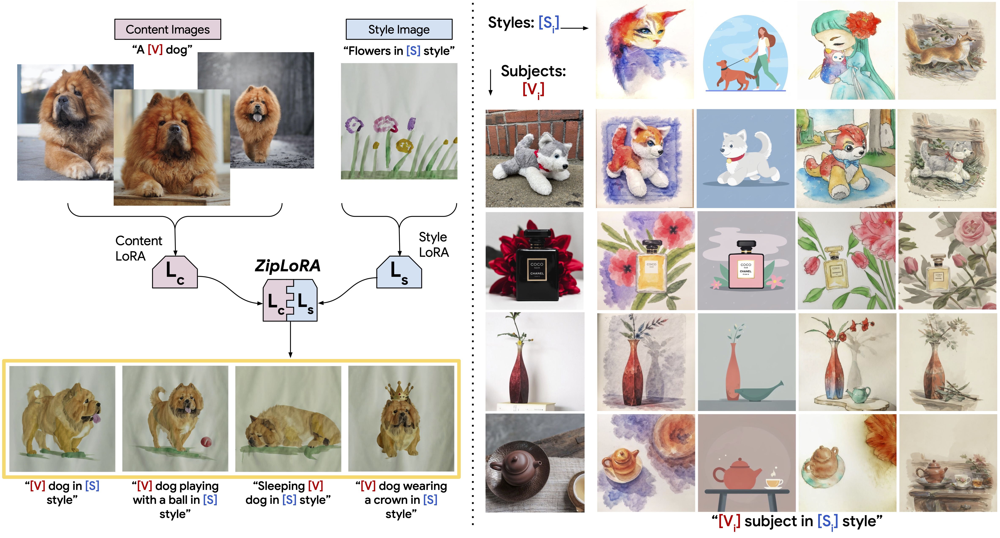

ZipLoRA: Any Subject in Any Style by Effectively Merging LoRAs

Methods for finetuning generative models for concept-driven personalization generally achieve strong results for subject-driven or style-driven generation. Recently, low-rank adaptations (LoRA) have been proposed as a parameter-efficient way of achieving concept-driven personalization. While recent work explores the combination of separate LoRAs to achieve joint generation of learned styles and subjects, existing techniques do not reliably address the problem, so that either subject fidelity or style fidelity are compromised. We propose ZipLoRA, a method to cheaply and effectively merge independently trained style and subject LoRAs in order to achieve generation of any user-provided subject in any user-provided style. Experiments on a wide range of subject and style combinations show that ZipLoRA can generate compelling results with meaningful improvements over baselines in subject and style fidelity while preserving the ability to recontextualize.

Our method takes as input a few images (typically 3-5 images suffice, based on our experiments) of a subject (e.g., a specific dog) and the corresponding class name (e.g. "dog"), and returns a fine-tuned/"personalized'' text-to-image model that encodes a unique identifier that refers to the subject. Then, at inference, we can implant the unique identifier in different sentences to synthesize the subjects in difference contexts.

Given ~3-5 images of a subject we fine tune a text-to-image diffusion in two steps: (a) fine tuning the low-resolution text-to-image model with the input images paired with a text prompt containing a unique identifier and the name of the class the subject belongs to (e.g., "A photo of a [T] dog”), in parallel, we apply a class-specific prior preservation loss, which leverages the semantic prior that the model has on the class and encourages it to generate diverse instances belong to the subject's class by injecting the class name in the text prompt (e.g., "A photo of a dog”). (b) fine-tuning the super resolution components with pairs of low-resolution and high-resolution images taken from our input images set, which enables us to maintain high-fidelity to small details of the subject.

Results for re-contextualization of a bag and vase subject instances. By finetuning a model using our method we are able to generate different images of the a subject instance in different environments, with high preservation of subject details and realistic interaction between the scene and the subject. We display the conditioning prompts below each image.

Original artistic renditions of our subject dog in the style of famous painters. We remark that many of the generated poses were not seen in the training set, such as the Van Gogh and Warhol rendition. We also note that some renditions seem to have novel composition and faithfully imitate the style of the painter - even suggesting some sort of creativity (extrapolation given previous knowledge).

Our technique can synthesized images with specified viewpoints for a subject cat (left to right: top, bottom, side and back views). Note that the generated poses are different from the input poses, and the background changes in a realistic manner given a pose change. We also highlight the preservation of complex fur patterns on the subject cat's forehead.

We show color modifications in the first row (using prompts ``a [color] [V] car''), and crosses between a specific dog and different animals in the second row (using prompts ``a cross of a [V] dog and a [target species]''). We highlight the fact that our method preserves unique visual features that give the subject its identity or essence, while performing the required property modification.

Outfitting a dog with accessories. The identity of the subject is preserved and many different outfits or accessories can be applied to the dog given a prompt of type "a [V] dog wearing a police/chef/witch outfit''. We observe a realistic interaction between the subject dog and the outfits or accessories, as well as a large variety of possible options.

This project aims to provide users with an effective tool for synthesizing personal subjects (animals, objects) in different contexts. While general text-to-image models might be biased towards specific attributes when synthesizing images from text, our approach enables the user to get a better reconstruction of their desirable subjects. On contrary, malicious parties might try to use such images to mislead viewers. This is a common issue, existing in other generative models approaches or content manipulation techniques. Future research in generative modeling, and specifically of personalized generative priors, must continue investigating and revalidating these concerns.
@article{ruiz2022ZipLoRA,
title={ZipLoRA: },
author={Ruiz, Nataniel and Li, Yuanzhen and Jampani, Varun},
booktitle={arXiv preprint arxiv:2208.12242},
year={2022}
}
Acknowledgements: We thank